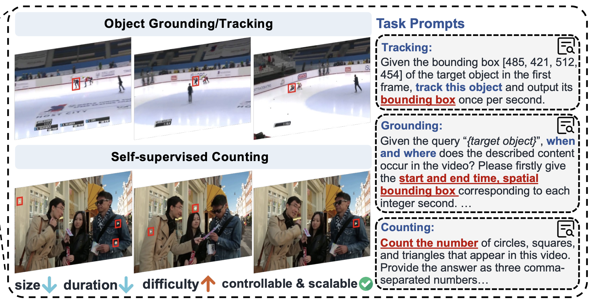
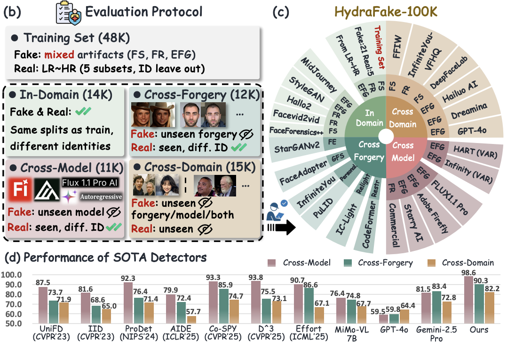
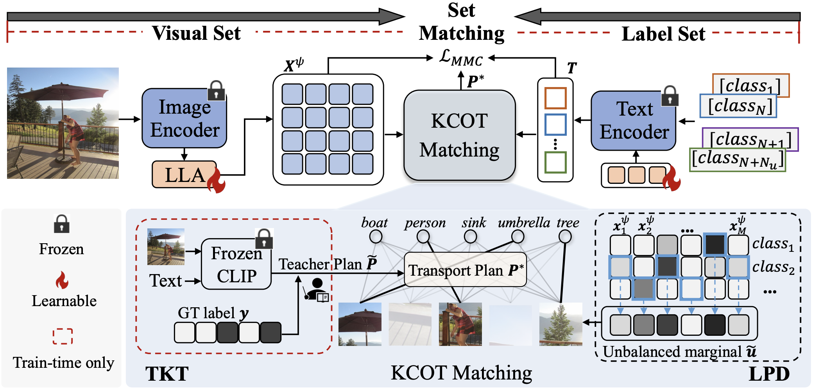
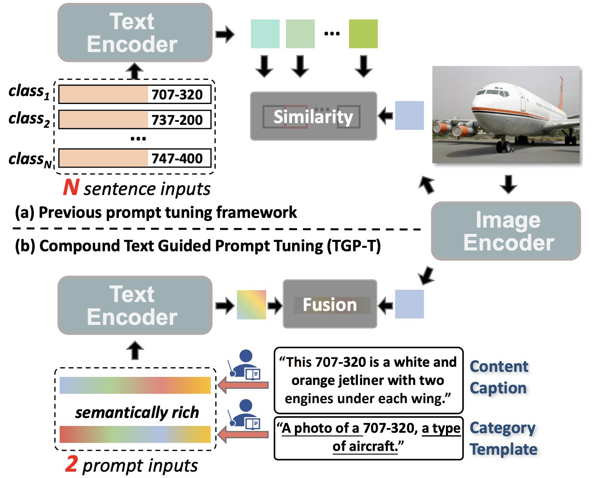
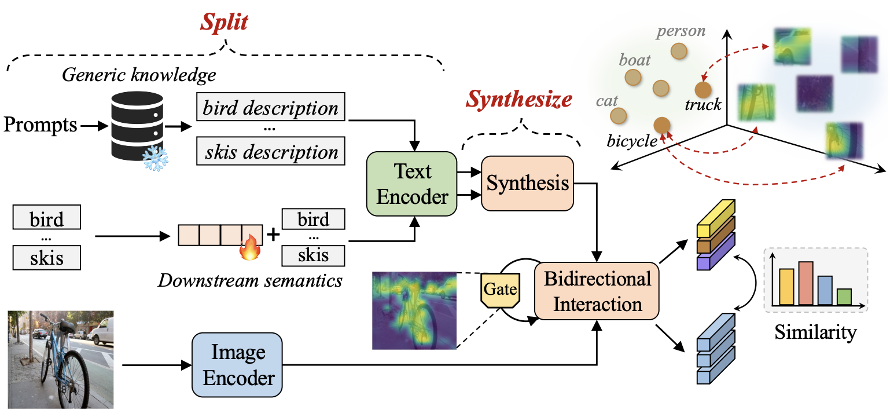
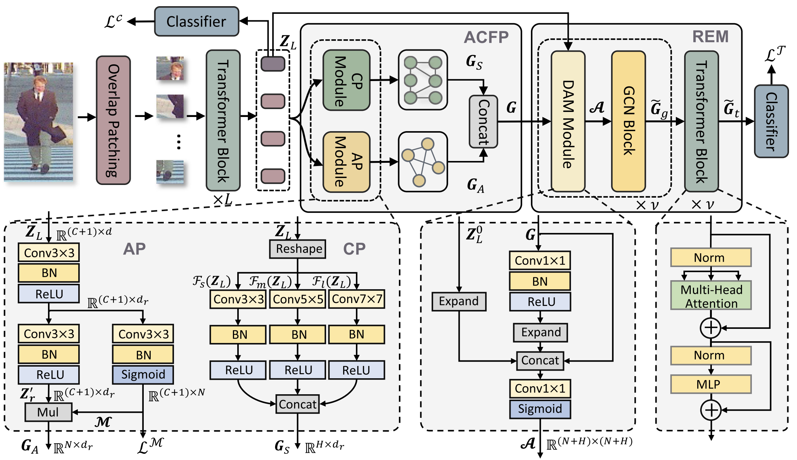

Ant Group (2025.03 - Current)
Research Intern
Topic: MLLM post-training for AIGC image/video detection.
I am a third-year Ph.D. student at the State Key Laboratory of Multimodal Artificial Intelligence Systems, Institute of Automation, Chinese Academy of Sciences (CASIA), advised by Prof. Jun Wan and Prof. Zhen Lei. I received my B.E. degree from South China University of Technology (SCUT) in 2023. I have received the National Scholarship for three times.
My research focuses on Multi-modal Large Language Models (MLLMs), including 1.efficient tuning of vision-language models, 2.generalizable AIGC/deepfake detection, 3.deep reasoning & multi-modal perception.
Research Intern
Topic: MLLM post-training for AIGC image/video detection.
Selected first-author publications and representative co-authored work.





IEEE Transactions on Circuits and Systems for Video Technology (TCSVT), 2026.

IEEE Transactions on Multimedia (TMM), 2025.